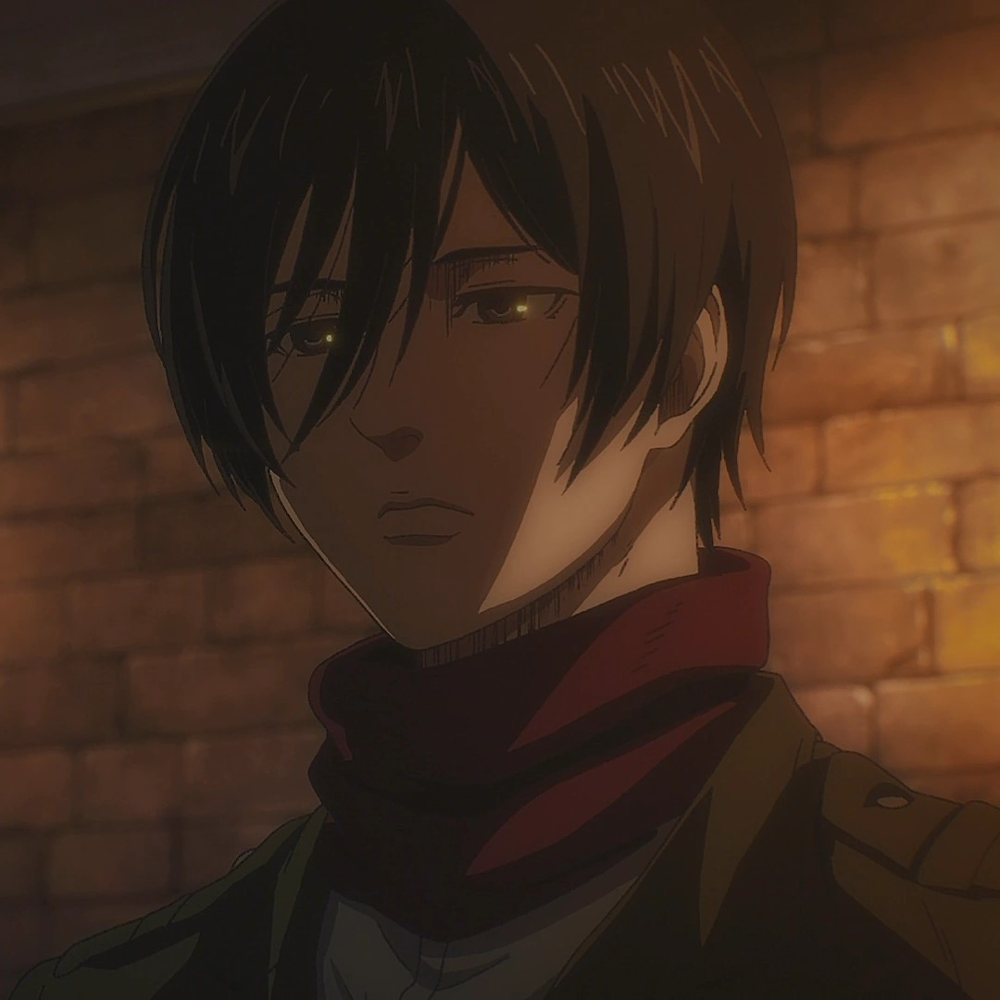

The Characters
There is a wide range of characters in the Attack on Titan Universe. So many that I won't even be able to talk about them all. So I am only going to the list the most important characters of the series who had the biggest impact.
Below is a table of the most important characters.
| Characters | Role | Characteristics |
|---|---|---|
| Eren Yeager |
Main Protagonist | He is motivated to killl off all the Titans after seeing his mother get devoured by one. |
| Mikasa Ackerman  |
Member of the Scout Regiment | Loyal and highly skilled, with a strong protective instinct for Eren. |
| Armin Arlert |
Strategist | Known for his intelligence and strategic thinking. |
| Erwin Smith |
Commander | Commands the Scout Regiment and is known for his unwavering determination |
| Levi Ackerman |
Soldier and Captain | Captain of the survey corps and is known as humanities strongest soldier |
| Sasha Braus |
Member of the Scout Regiment | Friendly, fun and loving girl. She is a skill shot and got it from her father who was a hunter. |
| Jean Kirschtein |
Member of the Scout Regiment | A man who speaks his mind no matter what it does to others feelings. He wanted a safe and easy life but decided to become a member of the scout regiment instead. |
| Conny Springer |
Member of the Scout Regiment | He has an outgoing personality and likes to express his opinions. He is often viewed as a goofball because he loves goof around. |
| Hange Zoë |
Researcher and Commander | Known for her intelligence, that is debated to be at the same level as Levi Ackerman's combat skills. |
Historia Reiss  |
Queen of the Walls | She is one of the last remaining of the Royal family. She was also a former member of the scout regiment. |
| Annie Leonhart |
The Female Titan | Skillfull fighter and one of the top soldiers but very isolated and don't make friends easily |
| Reiner Braun |
The Armored Titan | A quiet man but very loyal and driven to succeed. |
| Bertholdt Hoover |
Former Collosal Titan | Introverted and very quiet. Bertholdt is known as a boy with a low self-esteem and stands in the background but also plays a big role. |
| Pieck Finger |
Cart Titan | Very sweet and kind and always shows care towards her fellow warriors. |
| Zeker Yeager |
Beast Titan | Older half brother of Eren Yeager and is the war chief of the warriors |
| Gabi Braun |
Reiner Braun's cousin | Top warrior candidate in Marley and is a fearless girl. |
| Falco Bach |
Candidate for the Armored Titan powers | He has a strong determination to protect his friends. |